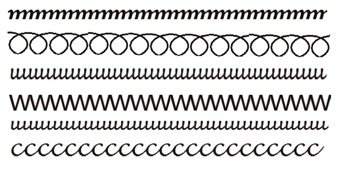

Michoro inaonyesha meza, kiti, kikombe chenye mshikio na chupa. Mwanafunzi achore vitu hivyo kwenye kibao au daftari.
Andika jibu kwa mkono katika sehemu hii.
Chora mikufu hii kwenye kibao.

Mchoro wa mikufu una mistari sita. Kutoka juu kwenda chini inaonyesha ma, o, u, wa, u na cha zikiwa zimerudiwa. Mwanafunzi achore mikufu hiyo kwenye kibao.
Andika jibu kwa mkono katika sehemu hii.
Somo la pili: Kuchora kwenye daftari na kupaka rangi
Somo la pili
Kuchora kwenye daftari na kupaka rangi
Katika somo hili utajifunza kuchora kwenye daftari. Pia,
utapaka rangi michoro hiyo.
Chora michoro hii kwenye daftari kisha paka rangi kilamchoro.
Mchoro unaonyesha picha tatu zilizopangwa kutoka kushoto kwenda kulia: bata anayesimama, paka anayekaa, na ua lenye petali tano. Mwanafunzi achore bata, paka na ua kwenye daftari, kisha apake rangi kila mchoro.